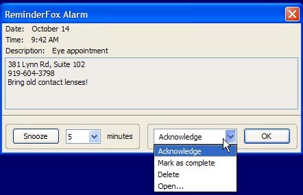
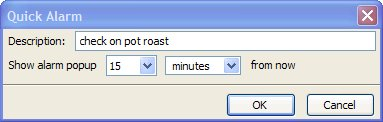
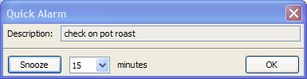

Notifications and Alarms
Notifications and Alarms
Notifications and Alarms
Notifications and Alarms
Contents |
Reminders/events and tasks stored in Reminderfox can be changed in different ways.
to trigger notes for the user.
The 'Foxy' icon on the Thunderbird menu bar indicates upcoming or due appointments,
the cursor on the 'Foxy' opens an overview of upcoming appointments or tasks.
A dialog window with messages about the events appears at adjustable time intervals.
An alarm system opens a dialog window at predetermined times.
Here you can directly determine how to proceed with the alarm, the message / the appointment.
Reminderfox also provides an alarm system for short-term events.
These so-called 'Quick' alarms,
which are not saved in the list,
they only exist during the current session.

You can simply acknowledge the alarm or select a number of other options from the pull-down menu.
After that period has passed, you will get an alarm popup:
You can snooze the alarm or simply acknowledge it.